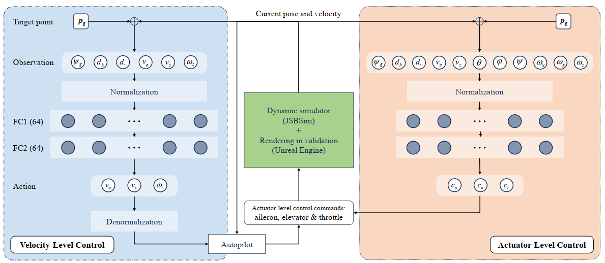
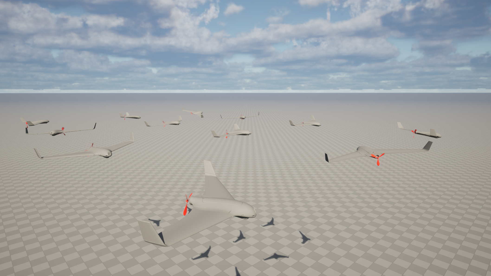
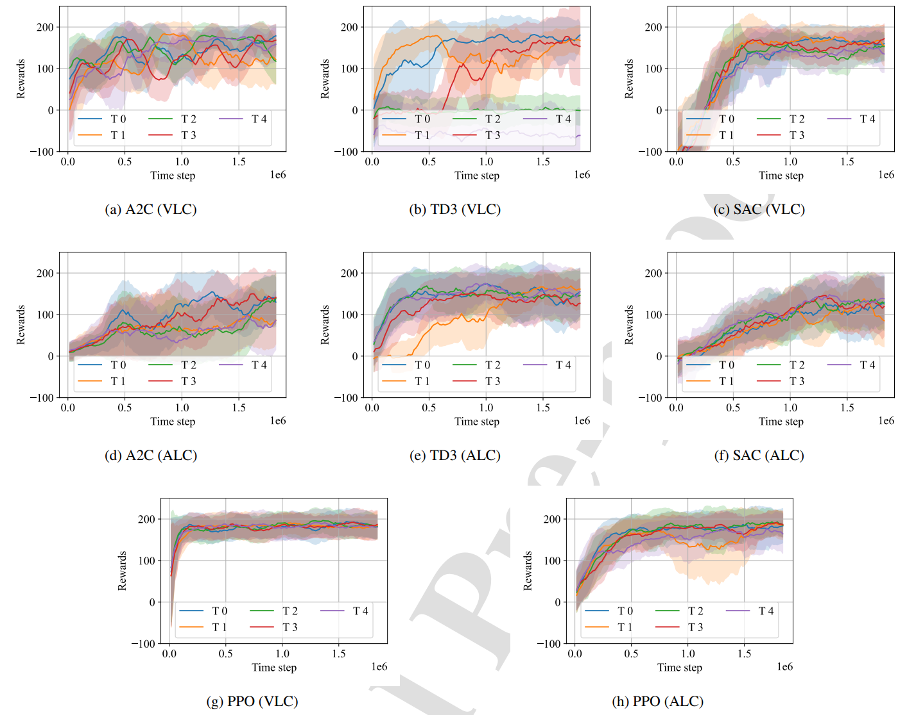
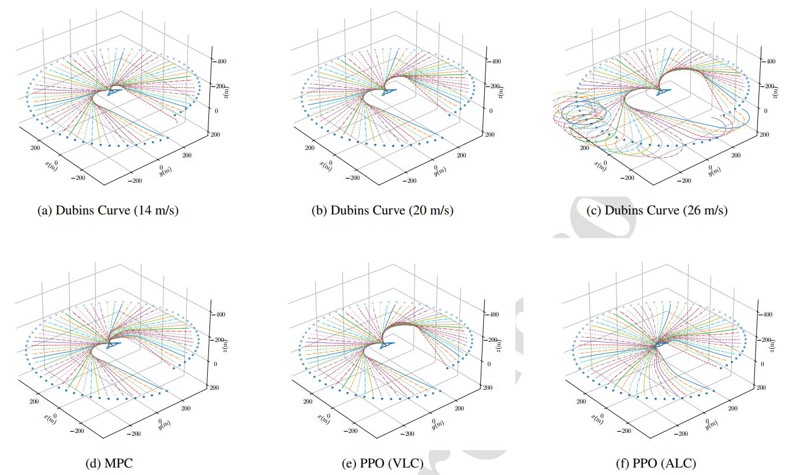
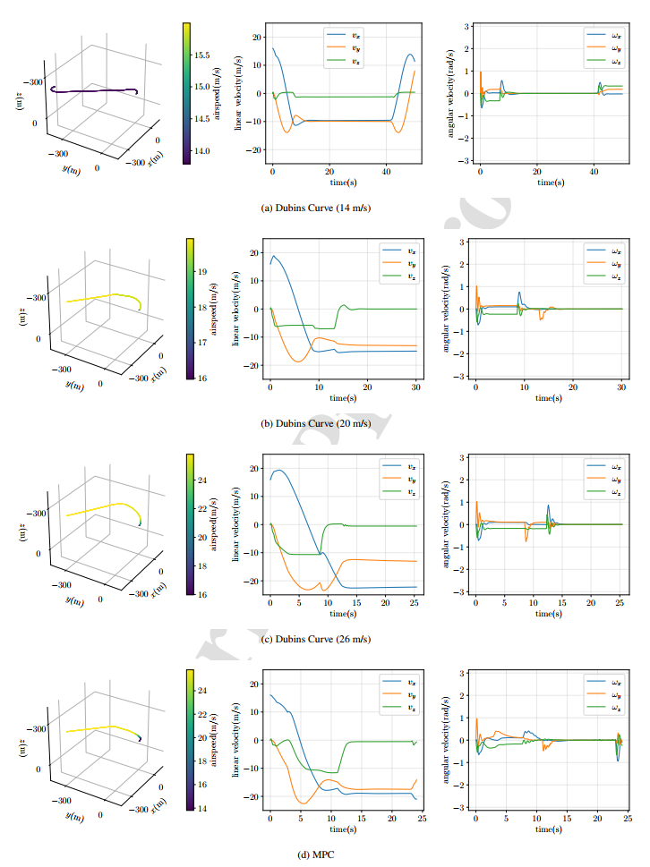
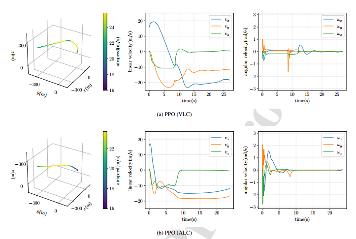

| 论文标题 | Learning minimum-time flight control for fixed-wing UAVs in three-dimensional space with high-fidelity 6-DOF dynamics（基于高保真六自由度动力学的固定翼无人机最短时间飞行控制学习） |
| 作者 | Guanzheng Wang（王冠政）、Xiangke Wang（王祥科）、Xiaoxin Li（李啸鑫）、Zhihong Liu（通讯作者）（刘志宏）、Zhiqiang Miao（缪志强） |
| 单位 | 国防科技大学（National University of Defense Technology, NUDT），智能科学学院 / 装备状态感知与智能保障全国重点实验室；湖南大学（Hunan University），电气与信息工程学院 |
| 发表信息 | Journal of Automation and Intelligence (JAI)，2025年（Received: 2025-07-29 | Revised: 2025-11-05 | Accepted: 2025-11-23） |
| DOI / 链接 | 10.1016/j.jai.2025.11.007 | 开源代码：github.com/running-mars/OpenFlight |
| 一句话摘要 | 提出速度级控制（VLC）和执行器级控制（ALC）两种强化学习框架，在 JSBSim 高保真 6-DOF 固定翼无人机（Skywalker X8）动力学环境中训练 PPO/A2C/TD3/SAC 策略，以最短飞行时间为目标实现三维空间点对点飞行。PPO-ALC 相比传统 PID+Dubins 曲线方法平均飞行时间减少 27.6%，且展现出强大的泛化能力与控制稳定性。首次在强化学习框架下实现固定翼无人机执行器级最短时间飞行控制。 |
| 灵感来源 | → 启发产生的洞察 | 类型 |
|---|---|---|
| 四旋翼竞速中的端到端 RL（Kaufmann et al. 2023, Nature） | → 四旋翼可以通过 RL 直接从视觉/状态观测映射到电机指令，超越人类冠军级水平。固定翼 UAV 虽然动力学更复杂（欠驱动 + 强耦合），但端到端 RL 的思路同样适用——关键在于高保真仿真环境和合适的观测/动作空间设计 | 架构 |
| Dubins 曲线 + PID 的局限性（Ghadiry et al. 2020） | → Dubins 曲线假设恒定速度，但固定翼 UAV 在三维空间中的爬升-空速耦合使恒定速度策略在某些目标点（低空/高空）根本无法到达。RL 策略可以通过环境交互学习这种耦合关系，在需要快速爬升时自动加速、需要急转弯时自动减速——这是预设路径规划做不到的 | 方法 |
| 高保真 JSBSim 动力学（Gryte et al. 2018, Skywalker X8） | → 基于风洞实验+CFD 的 Skywalker X8 气动模型能够真实反映固定翼 UAV 在机动飞行中的非线性特性（失速、耦合、饱和）。在如此高保真环境中训练的 RL 策略，其 sim-to-real 差距远小于简化质点模型 | 数据 / 仿真 |
| VLC vs ALC 的双层架构设计 | → VLC（输出速度指令）更容易训练收敛——因为动作空间更抽象、更平滑，适合作为 baseline。ALC（直接输出舵面指令）虽然训练更难（收敛方差更大），但性能上限更高——因为不再受 PID 安全阈值的限制，可以完全释放 UAV 的机动潜力 | 策略 |
flowchart TB
subgraph TARGET["🎯 目标设定层"]
TGT["目标点 · 球坐标随机生成
r~U(d-50,d+50) · theta~U(81°,99°) · phi~U(-180°,180°)"]
end
subgraph OBS["📡 观测提取与归一化层"]
OBS1["观测量: DeltaPsi/d_h/Delta_h/v_a/v_z
VLC: 6维 · ALC: 11维(增加 姿态角+角速率)"]
OBS2["归一化: tanh压缩 + 线性缩放
确保输入量级一致 · 避免梯度消失"]
end
subgraph NET["🧠 策略网络层 (FC64-ReLU-FC64)"]
NET1["FC(64) → ReLU → FC(64)
输出经 tanh 激活 → [-1,1]"]
end
subgraph VLC["🔵 VLC路径: 速度级控制"]
VLC1["反归一化: scale*output+offset
期望偏航角速率 / 爬升率 / 空速"]
VLC2["底层PID: 速度误差 → 舵面偏转
引入信息损失和时延"]
end
subgraph ALC["🟢 ALC路径: 执行器级控制"]
ALC1["直接输出舵面指令
副翼[-1,1] · 升降舵[-1,1] · 油门[0,1]"]
ALC2["零中间环节 · 零级联误差
完全释放UAV机动潜能"]
end
subgraph ENV["🌍 JSBSim 6-DOF 高保真环境"]
ENV1["Skywalker X8 气动模型
风洞实验+CFD参数 · 30Hz仿真"]
ENV2["状态转移: 6-DOF数值积分(RK4)
平移+旋转+气动力+重力+推力"]
end
subgraph REW["📊 奖励与更新层"]
REW1["每步奖励: r=k1*Δd_h+k2*Δd_v+k3*Δψ
k1=0.25 · k2=1 · k3=20"]
REW2["PPO/A2C/TD3/SAC 策略更新
多进程并行采样 · 集中训练分散执行"]
end
subgraph VIS["🎨 可视化层 (验证时启用)"]
VIS1["UE5 渲染 · 飞行轨迹可视化
训练时禁用 · 节省算力"]
end
TGT --> OBS1 --> OBS2 --> NET1
NET1 --> VLC1 --> VLC2 --> ENV1
NET1 --> ALC1 --> ALC2 --> ENV1
ENV1 --> ENV2 --> REW1 --> REW2
REW2 -.->|"新策略参数"| NET1
ENV2 --> VIS1
REW2 -.->|"GAE优势估计引导探索"| NET1
classDef target fill:#fef7ed,stroke:#f59e0b,stroke-width:2px,color:#92400e
classDef obs fill:#e6faf8,stroke:#14b8a6,stroke-width:2px,color:#0f766e
classDef net fill:#e8f0fe,stroke:#3b82f6,stroke-width:2px,color:#1d4ed8
classDef vlc fill:#dbeafe,stroke:#2563eb,stroke-width:2px,color:#1e40af
classDef alc fill:#e6f7ee,stroke:#10b981,stroke-width:2px,color:#047857
classDef env fill:#f0ebfd,stroke:#8b5cf6,stroke-width:2px,color:#6d28d9
classDef rew fill:#ffeaf0,stroke:#f43f5e,stroke-width:2px,color:#be123c
classDef vis fill:#f3f4f6,stroke:#9ca3af,stroke-width:2px,color:#4b5563
class TGT target
class OBS1,OBS2 obs
class NET1 net
class VLC1,VLC2 vlc
class ALC1,ALC2 alc
class ENV1,ENV2 env
class REW1,REW2 rew
class VIS1 vis
flowchart TB
subgraph SAMPLING["🎲 目标点采样"]
direction LR
TGT1["球坐标随机生成: r~U(d-50,d+50)"] --> TGT2["仰角 theta~U(81,99) · 方位角 phi~U(-180,180)"]
end
subgraph OBSERVE["📡 观测提取"]
direction LR
O1["相对位置: DeltaPsi / d_h / Delta_h"] --> O2["自身速度: 空速v_a / 垂直速度v_z"]
end
subgraph NORMALIZE["📐 归一化"]
direction LR
N1["tanh(k1*d_h) · tanh(k2*Delta_h)
tanh(k3*(v_a-20)) · tanh(k4*v_z)"] --> N2["DeltaPsi/2 · psi_dot/4
线性缩放: 姿态角/4 · 角速率/2"]
end
subgraph INFER["🧠 策略推理"]
direction LR
I1["FC(64)→ReLU→FC(64)→tanh
输出: a[i] ∈ [-1,1]"] --> I2{"控制层级选择"}
end
subgraph VLC_PATH["🔵 VLC: 反归一化 + PID"]
direction LR
V1["psi_dot = 0.5*a[1] · [-0.5, 0.5] rad/s"] --> V2["v_c_dot = 6*a[2] · [-6, 6] m/s"]
V2 --> V3["v_a = 3*a[3] · [14, 26] m/s"] --> V4["PID: 速度误差→舵面偏转
存在时延和级联误差"]
end
subgraph ALC_PATH["🟢 ALC: 直驱舵面"]
direction LR
A1["副翼 delta_a = a[1] · [-1,1]"] --> A2["升降舵 delta_e = a[2] · [-1,1]"]
A2 --> A3["油门 delta_t ∈ [0,1]"] --> A4["零中间环节 · 零级联误差
完全释放UAV机动潜能"]
end
subgraph SIMULATE["🌍 JSBSim 6-DOF 数值积分"]
direction LR
S1["气动力: D/S/L = f(alpha, beta, Ma, 舵面)
风洞实验查表 · 高度非线性"] --> S2["6-DOF RK4积分 · delta_t=33ms
平移+旋转+耦合项完整求解"]
end
subgraph UPDATE["📊 经验收集与策略更新"]
direction LR
U1["每步计算r_t = k1*Δd_h+k2*Δd_v+k3*Δψ
终止条件检查: 高度/到达/超时/角速率"] --> U2["多进程Vectorized Envs聚合经验
集中训练·分散执行"]
U2 --> U3["PPO clipped更新 · GAE优势估计
trust-region约束 · 小步长策略改进"]
end
SAMPLING --> OBSERVE --> NORMALIZE --> INFER
INFER -->|"VLC"| VLC_PATH
INFER -->|"ALC"| ALC_PATH
VLC_PATH --> SIMULATE
ALC_PATH --> SIMULATE
SIMULATE --> UPDATE
UPDATE -.->|"新策略参数 · 闭环比环"| INFER
UPDATE -.->|"GAE引导探索 · 采样多样性"| SAMPLING
classDef sample fill:#fef7ed,stroke:#f59e0b,stroke-width:2px,color:#92400e
classDef obs fill:#e6faf8,stroke:#14b8a6,stroke-width:2px,color:#0f766e
classDef norm fill:#e8f0fe,stroke:#3b82f6,stroke-width:2px,color:#1d4ed8
classDef infer fill:#dbeafe,stroke:#2563eb,stroke-width:2px,color:#1e40af
classDef vlc fill:#e0e7ff,stroke:#6366f1,stroke-width:2px,color:#3730a3
classDef alc fill:#e6f7ee,stroke:#10b981,stroke-width:2px,color:#047857
classDef sim fill:#f0ebfd,stroke:#8b5cf6,stroke-width:2px,color:#6d28d9
classDef update fill:#ffeaf0,stroke:#f43f5e,stroke-width:2px,color:#be123c
class TGT1,TGT2 sample
class O1,O2 obs
class N1,N2 norm
class I1,I2 infer
class V1,V2,V3,V4 vlc
class A1,A2,A3,A4 alc
class S1,S2 sim
class U1,U2,U3 update
flowchart TD
subgraph INIT["阶段1: 回合初始化"]
direction LR
I1["UAV初始位置: (0,0,-100)m
原点正上方100m"] --> I2["目标点随机生成
球坐标: r, theta, phi"]
end
subgraph OBSERVE2["阶段2: 观测获取与归一化"]
direction LR
O3["提取11维原始状态
相对位置+速度+姿态+角速率"] --> O4["tanh+线性缩放归一化
输入神经网络前向传播"]
end
subgraph ACT["阶段3: 动作推理与执行"]
direction LR
A5{"策略类型?"} -->|"VLC"| A6["反归一化→期望速度指令
→PID→舵面偏转"]
A5 -->|"ALC"| A7["直接输出舵面指令
副翼+升降舵+油门"]
A6 --> A8["JSBSim一步仿真
delta_t=33ms · 6-DOF积分"]
A7 --> A8
end
subgraph REWARD["阶段4: 奖励计算与终止判断"]
direction LR
R1["r = 0.25*Δd_h + 1*Δd_v + 20*Δψ"] --> R2{"终止条件?"}
R2 -->|"高度越界[10,190]m"| R3["回合终止 · 坠机"]
R2 -->|"到达目标 <30m"| R4["回合成功 · 到达!"]
R2 -->|"超时 40/50s"| R5["回合超时"]
R2 -->|"角速率>10rad/s"| R6["回合终止 · 失控"]
R2 -->|"继续"| O3
end
subgraph TRAIN["阶段5: 策略更新"]
direction LR
T1["多进程并行采样
经验聚合至buffer"] --> T2["PPO/A2C/TD3/SAC
优势估计+梯度更新"]
T2 --> T3["新策略参数下发
下一轮采样开始"]
end
subgraph EVAL["阶段6: 评估与可视化"]
direction LR
E1["64个目标点泛化测试
不同方向+不同高度"] --> E2["UE5渲染飞行轨迹
与Dubins/MPC对比"]
end
INIT --> OBSERVE2 --> ACT --> REWARD
REWARD -->|"episode结束"| TRAIN
TRAIN -.->|"更新后策略"| OBSERVE2
TRAIN -->|"定期评估"| EVAL
EVAL -.->|"性能反馈"| TRAIN
classDef init fill:#fef7ed,stroke:#f59e0b,stroke-width:2px,color:#92400e
classDef obsv fill:#e6faf8,stroke:#14b8a6,stroke-width:2px,color:#0f766e
classDef act fill:#e8f0fe,stroke:#3b82f6,stroke-width:2px,color:#1d4ed8
classDef reward fill:#f0ebfd,stroke:#8b5cf6,stroke-width:2px,color:#6d28d9
classDef train fill:#ffeaf0,stroke:#f43f5e,stroke-width:2px,color:#be123c
classDef eval fill:#e6f7ee,stroke:#10b981,stroke-width:2px,color:#047857
class I1,I2 init
class O3,O4 obsv
class A5,A6,A7,A8 act
class R1,R2,R3,R4,R5,R6 reward
class T1,T2,T3 train
class E1,E2 eval
| 类别 | 内容 | 维度 |
|---|---|---|
| 输入（观测） | 目标相对方位偏差 Delta_psi、水平距离 d_h、高度差 Delta_h；UAV 自身空速 v_a、NED 垂直速度 v_z；姿态角 (roll phi, pitch theta, yaw psi)；角速率 (p, q, r) | 11 维连续向量（VLC 仅用前 6 维） |
| 输出（VLC） | 期望偏航角速率 psi_dot in [-0.5, 0.5] rad/s、期望爬升率 v_dot_c in [-6, 6] m/s、期望空速 v_a in [14, 26] m/s | 3 维连续动作（经 PID 转换为舵面指令） |
| 输出（ALC） | 副翼 delta_a in [-1, 1]、升降舵 delta_e in [-1, 1]、油门 delta_t in [0, 1] | 3 维连续动作（直驱舵面，不经过PID） |
| 目标 | 在 40s（VLC）/ 50s（ALC）时限内、最低安全高度 10m 约束下，以最短时间到达距目标点 30m 范围内的三维空间位置 | 标量：飞行时间（秒） |
这是一个连续控制 + 最短时间最优控制问题。不同于姿态跟踪（维持参考信号）或路径跟踪（沿预设轨迹），本文的任务是自由探索三维空间中的最优飞行轨迹——策略不仅决定"怎么飞"（控制），还隐式地决定了"飞什么路径"（规划）。平台：Skywalker X8 固定翼 UAV（高保真 JSBSim 模型，翼展 2.1m，起飞重量 ~2.5kg），场景：三维空间点对点飞行（64 个不同方向和高度目标点），任务：在安全约束下最小化到达时间。本质上是将路径规划+轨迹跟踪+底层控制三者统一为端到端 RL 策略。
⚠ 表头用英文，正文用中文
| Prior Method | Core Idea | Why It Fails |
|---|---|---|
| Dubins Curve + PID（传统路径规划 + 跟踪控制） | 用 Dubins 曲线（最小转弯半径约束下的最短路径）规划二维航迹，扩展到三维后以恒定巡航速度跟踪，底层 PID 控制舵面和油门 | 恒定速度假设是致命缺陷：在 14 m/s 时 UAV 爬升不足，无法到达高空目标点；在 26 m/s 时转弯半径过大且爬升过快，无法到达低空目标点。Dubins 曲线的"最优性"仅在恒定速度假设下成立，而实际飞行中最优速度是时变的——加速爬升、减速转弯、俯冲加速，这种变速策略远超 Dubins 的表达能力。PID 的安全阈值进一步限制了机动性能。 |
| Model Predictive Control（MPC，基于简化质点模型） | 利用简化的独轮车运动学模型（unicycle model）进行在线滚动优化，以 30Hz 频率求解带约束的最优控制问题（SLSQP 求解器） | MPC 使用了简化运动学模型而非完整 6-DOF 动力学——忽略了姿态动力学、气动耦合和非线性效应。虽然平均飞行时间（25.50s）优于 Dubins+PID（27.94s），但无法体现"急转弯减速、俯冲加速"等充分利用气动特性的机动。此外，MPC 需要在线求解优化问题，计算开销大——本文只是为了对比而实现的简化版本。接近目标点时 MPC 的速度出现波动（Fig.5d），说明简化模型在精确接近阶段精度不足。 |
| RL-based Attitude Control（PPO/DQN/DDPG 姿态控制） | 用 RL 替代内环 PID，控制固定翼 UAV 的 pitch/roll 姿态角或航向角，使其跟踪预设的参考信号（如 Bohn et al. 2023, Chowdhury & Keshmiri 2024） | 这些工作将 RL 局限在替代单个控制回路——整体架构仍然是"规划 -> 跟踪 -> 执行"的多层结构。优化目标是跟踪误差而非飞行时间。RL 策略没有机会去"探索更快的飞行方式"，只能在给定的参考轨迹框架内进行局部优化。本质上是把 RL 当作一个更好的 PID 来用——而不是让 RL 重新定义"什么是最优飞行"。 |
| RL-based Navigation（DDPG/SAC 导航控制） | 用 RL 同时控制 UAV 的航向、高度和速度以到达目标点（如 Zhang et al. 2021, Zhou et al. 2024） | 虽然超越了单纯姿态控制的范畴，但优化目标通常是最小化跟踪误差或到达成功率，而非最小化飞行时间。且大多数工作使用简化动力学模型（3-DOF 质点模型），未在高保真 6-DOF 环境中验证。SAC+APF（Zhou et al.）虽然改进了轨迹平滑性，但人工势场的引入实际上限制了策略的自由度——某些"看起来不光滑但更快"的机动轨迹被排除在搜索空间之外。 |
本文的方法论核心不是提出新的 RL 算法，而是在统一的 POMDP + RL 框架下，系统性地设计并比较两种控制层级（VLC vs ALC），并通过四种 SOTA 算法的基准测试，找出能够稳定解决"高保真 6-DOF 固定翼 UAV 最短时间飞行"这一难题的最佳组合。关键设计要素包括：（1）观测空间的选择与归一化策略；（2）动作空间的语义层级设计；（3）奖励函数的 shaping 策略；（4）终止条件的精心设置。以下逐一拆解。
LaTeX rendered by MathJax. 显示公式用 $$...$$，行内公式用 $...$。⚠ 符号解释请用中文。
| 参数 | 取值 | 含义 | 为什么取这个值 |
|---|---|---|---|
| 网络结构 | 2层 FC，每层 64 神经元 | 策略网络（actor）的隐藏层配置，ReLU 激活 | 在模型复杂度和训练效率之间取得平衡——64 神经元足以捕获状态-动作之间的非线性映射，又不会因参数过多导致过拟合或训练过慢。2 层结构是连续控制 RL 的常见基线选择 |
| 控制频率 | 30 Hz（每步 33ms） | 策略推理和 JSBSim 仿真步进频率 | 匹配 JSBSim 的默认仿真步长。30Hz 对于固定翼 UAV 的飞行控制是足够的——舵机响应时间（~50ms）限制了更高的频率的实际意义 |
| 目标点采样分布 | r~U(d-50, d+50), theta~U(81deg, 99deg), phi~U(-180deg, 180deg) | 球坐标参数：径向距离、仰角、方位角的连续均匀分布 | 确保训练数据的多样性——目标点分布在两个球面之间，覆盖不同距离、高度和方向。仰角范围（81deg~99deg 即 +/-9deg 从水平面）确保目标点高度在合理范围内 |
| 到达距离阈值 epsilon | 30 m | 判定 UAV 已到达目标点的欧氏距离上限 | 考虑到 UAV 翼展 ~2.1m 和 GPS 定位精度，30m 是合理的"到达"标准。太严（如 5m）会导致策略难以收敛，太松（如 100m）则任务失去意义 |
| 最高飞行时限 | 40 s (VLC) / 50 s (ALC 评估) | 单次飞行的最大允许时间 | 考虑到目标距离 ~500m 和飞行速度 14~26 m/s，理论最短时间约 20~36s。40~50s 的时限为策略留出了合理的探索余量，同时避免了无意义的漫长飞行 |
| 并行环境数量 | 多进程 Vectorized Envs | 利用 Stable-Baselines3 的向量化环境同时运行多个 UAV 实例 | 集中训练 + 分散执行范式——每个 UAV 独立与环境交互，经验聚合后统一更新策略。大幅提升采样多样性和训练效率 |
理解 OpenFlight 需要掌握四个关键基础原理：POMDP 形式化与 RL 最优控制（为什么将飞行控制建模为序列决策问题）、PPO 算法原理（为什么 PPO 在 ALC 任务中独家成功）、固定翼 6-DOF 动力学耦合原理（为什么固定翼难于四旋翼）、奖励函数 shaping 原理（如何将"最短时间"转化为可学习的密集信号）。
POMDP 建模的工程意义：传统控制方法（PID、MPC）假设"状态完全已知"，在此基础上设计控制律。但实际飞行中，许多状态变量（如侧滑角、实时气动参数）是无法精确测量的。将问题建模为 POMDP 意味着策略从一开始就接受"信息不完整"这一现实，并在训练过程中学会如何用有限观测（11 维归一化向量）做出接近最优的决策——这比传统方法"先假设全知再补偿不确定性"的方式更加鲁棒。
| 对比维度 | PPO (On-Policy) | TD3 / SAC (Off-Policy) |
|---|---|---|
| 数据来源 | 仅使用当前策略采集的最新数据——每轮更新后旧数据全部丢弃 | 使用经验回放缓冲区（Replay Buffer）——保存数百万步的历史数据用于训练 |
| 对动作空间敏感度的鲁棒性 | 高——因为训练数据始终与当前策略分布一致，不存在"分布偏移"问题 | 低——当策略变化剧烈时（ALC 的特点），缓冲区中的旧数据来自完全不同的策略分布，导致 Q 值估计系统性偏差 |
| 样本效率 | 较低——每轮数据只用一次就丢弃，需要大量环境交互 | 较高——每一条经验可以被反复使用多次 |
| 训练稳定性 | 高——clipped objective 保证每次更新幅度可控 | 中等至低——Q 值过估计（overestimation bias）是高维动作空间的常见问题 |
| 在 ALC 中的表现 | 成功收敛，控制信号平滑，无振荡 | 全部失败——SAC 无法到达目标，TD3 性能劣于 VLC，A2C 坠机 |
为什么只有 PPO 成功？—— 一个来自控制理论的直觉解释：ALC 的动作空间是"高带宽"的——副翼和升降舵的微小变化（如 0.01 rad 偏转）会在数秒内被气动力放大为米级的轨迹偏差。这意味着动作空间的 Lipschitz 常数非常大——策略输入的微小扰动会导致输出轨迹的巨大变化。Off-policy 算法（TD3/SAC）试图从历史数据中学习 Q 值，但 ALC 环境中，历史数据可能来自一个"已经不存在的策略"，其 Q 值估计对当前策略毫无参考价值——这就像用昨天的天气数据预测明天的台风路径。PPO 的 on-policy 特性确保了"训练数据始终新鲜"——每次更新只使用当前策略刚采集的数据，从根本上解决了分布偏移问题。此外，clip 机制提供的隐式 trust-region 约束确保了在高灵敏度动作空间中，策略不会在一次更新中更新幅度过大导致训练崩溃。
奖励 shaping 与稀疏奖励的对比：如果使用稀疏奖励（仅在到达目标时给予 +1，其他时间步给予 0），在连续控制环境中策略将面临"探索瓶颈"——在到达目标之前，数万个时间步中没有任何学习信号，策略等同于随机游走。Shaped reward 将"到达目标"这一远期目标分解为"缩短水平距离 + 缩短垂直距离 + 对准航向"三个每步都可测量的子目标——即便在训练早期策略很差时，UAV 至少能"感觉到"自己是否在向目标靠近。这就是为什么四种 RL 算法在 VLC 中全都能收敛——shaped reward 降低了探索难度。
📷 论文原图截图。图片保存至 figures/ 子目录。命名 fig1.png ~ fig6.png 即可自动显示。

📷 请将截图保存为figures/fig1.png本图展示了：OpenFlight 系统的完整学习流程——从目标点设定、观测提取与归一化、策略网络推理（FC(64)-ReLU-FC(64)）、动作输出（VLC 输出速度指令需反归一化 + PID 转换，ALC 直接输出舵面指令）、到 JSBSim 6-DOF 动力学仿真和 UE5 可视化渲染。训练时 UE5 可禁用以加速。

📷 请将截图保存为figures/fig2.png本图展示了：基于 Stable-Baselines3 Vectorized Envs 的多进程并行训练架构。每个 UAV 实例独立与 JSBSim 环境交互，经验聚合到中央 buffer 后统一优化策略——这是典型的"集中训练 + 分散执行"（Centralized Training with Decentralized Execution, CTDE）范式。

📷 请将截图保存为figures/fig3.png本图展示了：整篇论文最核心的实验结果。8 个子图分别对应 4 种算法在 VLC 和 ALC 两个任务上的奖励曲线（T0~T4 表示 5 次独立训练）。

📷 请将截图保存为figures/fig4.png本图展示了：6 种方法（Dubins 14m/s、20m/s、26m/s；MPC；PPO-VLC；PPO-ALC）在 64 个不同方向和高度的目标点上的三维飞行轨迹。UAV 初始位置在 (0, 0, -100)m，蓝色点为目标点。这张图是"一张图讲完泛化性对比故事"的典型范例。

📷 请将截图保存为figures/fig5.png本图展示了：针对 (-300, -400, -180)m 这一困难目标点（包含转弯、爬升和直飞段），三种恒定速度 Dubins 方案和 MPC 方案的飞行轨迹、空速曲线和角速率曲线。轨迹颜色表示该时刻的空速。

📷 请将截图保存为figures/fig6.png本图展示了：PPO 训练的 VLC 和 ALC 策略在同一目标点 (-300, -400, -180)m 的表现。这是论文最具说服力的一组对比——两种策略都在飞行中展示了变速能力（空速随飞行阶段变化），但 ALC 的机动性远胜于 VLC。
| 数据问题 | 潜在困难 | 严重程度 |
|---|---|---|
| 气动参数与实际平台的偏差 | JSBSim 中的 Skywalker X8 模型基于标准大气条件和理想机身状态。实际 UAV 的机身可能因维修、改装、载荷变化而导致气动特性偏移。RL 策略对气动参数敏感——策略在仿真中学会的"精准机动"可能在真实平台上因为气动偏差而变成"危险机动" | ★★★★★ |
| 训练随机种子敏感性（PPO ALC 的方差） | Fig.3h 中 PPO-ALC 的 5 次训练（T0~T4）奖励曲线存在明显差异——说明即便 PPO 是最优算法，其对初始条件和随机种子仍有一定敏感性。在生产部署中，可能需要多次训练取最优策略——增加了时间成本 | ★★★★ |
| 环境风扰动的缺失 | 论文未提及在仿真中引入风扰动（阵风、湍流、风切变）。引言中强调了"严重的大气扰动"作为挑战，但实验部分似乎仅在无风/理想条件下进行。在真实大气中，RL 策略的稳定性和鲁棒性可能大幅下降 | ★★★★ |
| 目标点分布范围的局限性 | 评估仅在距离 500m、高度 20~180m 的 64 个点进行。未测试更远距离（如 2~5 km）、更高高度（>500m）或极端方向（如正上方/正下方）的泛化能力。策略在这些未见过区域的表现未知 | ★★★ |
| 参考文献 | 为什么重要 |
|---|---|
| Kaufmann et al. (2023) — Champion-level drone racing using deep reinforcement learning. Nature 620, 982-987 | RL 在无人机竞速领域的里程碑——首次证明端到端 RL 可以在高敏捷性飞行任务中超越人类专家。本文（OpenFlight）的四旋翼竞速灵感直接来源于此。核心区别：固定翼 vs 四旋翼的动力学复杂度差异，使得固定翼的端到端 RL 更具挑战性 |
| Bohn et al. (2023) — Data-efficient deep reinforcement learning for attitude control of fixed-wing UAVs: Field experiments. IEEE Trans. Neural Netw. Learn. Syst. 35(3), 3168-3180 | 少数几个将 RL 固定翼控制推进到实飞验证阶段的工作——使用 PPO 和 SAC 进行姿态控制并在真实 Skywalker X8 上飞行。本文可以看作是在此工作基础上的扩展——从姿态跟踪升级到最短时间飞行，但仍停留在仿真阶段 |
| Chowdhury & Keshmiri (2024) — Interchangeable reinforcement-learning flight controller for fixed-wing UASs. IEEE Trans. Aerosp. Electron. Syst. 60(2), 2305-2318 | PPO 在固定翼 UAV 全舵面控制上的代表性工作——与本文的 ALC 设定相似但目标是通用飞行控制而非最短时间。对比阅读可以深入了解 PPO 在固定翼控制中的普适性 |
| Gryte et al. (2018) — Aerodynamic modeling of the Skywalker X8 fixed-wing unmanned aerial vehicle. ICUAS, 826-835 | Skywalker X8 气动模型的原始文献——理解 JSBSim 中 UAV 动力学参数的来源和精度。如果计划在本环境基础上做研究，这篇是必读的"数据来源说明" |
| Schulman et al. (2017) — Proximal policy optimization algorithms. arXiv:1707.06347 | PPO 原始论文——理解为什么 PPO 在 ALC 任务中独家成功的关键：clipped surrogate objective 提供的 trust-region 约束在高度敏感的动作空间中是不可替代的 |
| Song et al. (2023) — Reaching the limit in autonomous racing: Optimal control versus reinforcement learning. Sci. Robot. 8(82), eadg1462 | 从另一个角度探讨"RL vs 最优控制"的极限问题——在四旋翼竞速中，RL 能否达到最优控制的性能边界？本文（OpenFlight）加入了 MPC 作为对比，但 MPC 使用的是简化模型。如果用全 6-DOF 非线性 MPC（如 ACADO/iLQR），结果会如何？这是一个开放的对比问题 |